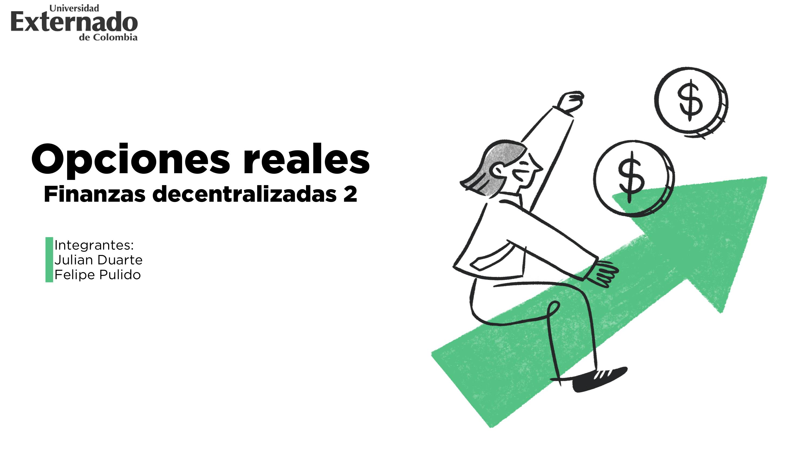
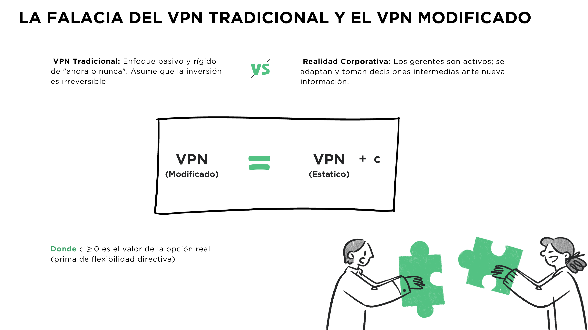
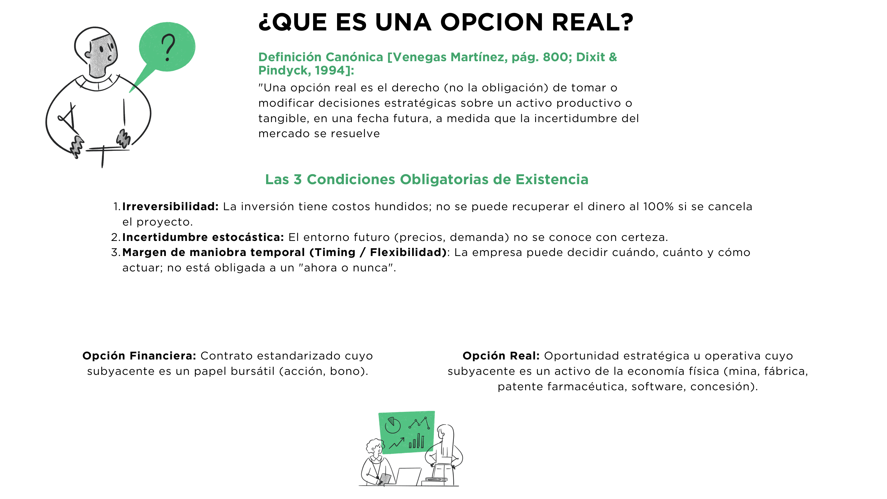
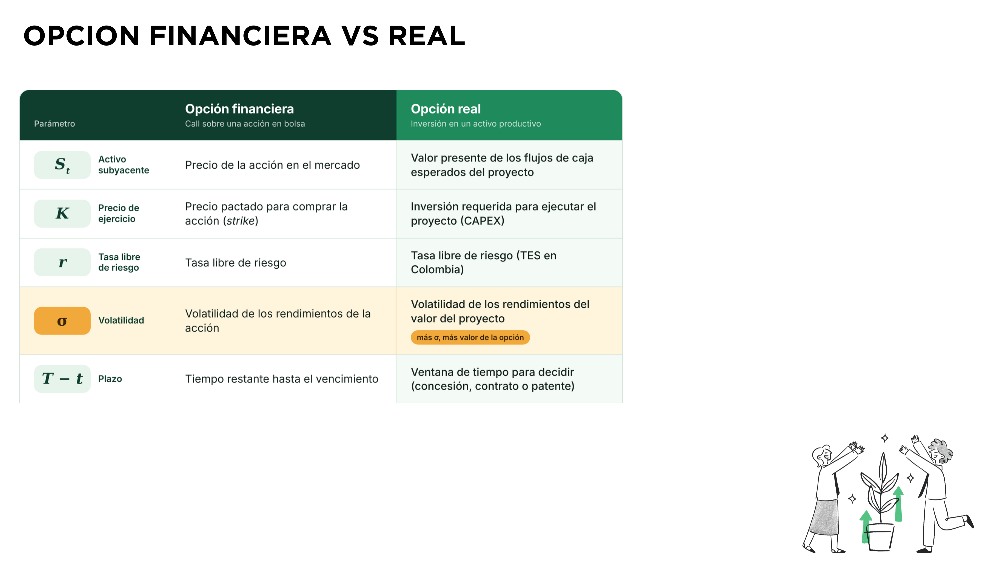

En proyectos pasivos de "ahora o nunca", mayor volatilidad eleva el costo de capital y destruye el valor presente de la inversión.
La incertidumbre no es un castigo, sino el combustible que expande la dispersión de oportunidades futuras al alza.
• Upside Ilimitado: Si el mercado despega favorablemente, el directivo ejerce y captura toda la rentabilidad.
• Downside Acotado: Si el mercado se desploma, el directivo se rehúsa a invertir o activa el abandono, acotando la pérdida.
Seis Formas de Flexibilidad Gerencial · Venegas Cap. 69; Dixit & Pindyck (1994)
La Ecuación Diferencial Parcial Fundamental · Venegas, pág. 806, Ec. 69.22
Decaimiento del valor de la opción conforme se agota la ventana temporal hacia el vencimiento.
Corrección estocástica por el Lema de Itô; captura el valor generado por la incertidumbre $\sigma$.
Tendencia esperada del activo subyacente ponderada por la sensibilidad del derivado ($\Delta$).
Costo financiero de financiar la posición descontado a la tasa libre de riesgo ($r$ = TES).
Black-Scholes decide únicamente en la fecha final $T$ (europea). En la empresa real, el directivo puede expandir o abandonar en cualquier momento $t \le T$.
Una fábrica no cotiza en bolsa y no hay cartera réplica continua. Copeland y Antikarov (2001) proponen el supuesto MAD: tomar el VPN sin flexibilidad como si fuera un activo negociado.
Modelo de Cox, Ross y Rubinstein (1979) · Venegas Ec. 69.28
Calibrados con la volatilidad anualizada $\sigma$ para igualar la varianza del proceso continuo de Black-Scholes.
No es una probabilidad real: hace que el activo crezca a la tasa libre de riesgo ($r$ = TES) para descontar sin sesgos.
$E$: valor de ejercer hoy. Compara período a período si conviene ejecutar la opción o seguir operando.
Árbol Binomial de 3 Períodos · Venegas Martínez, págs. 811–813
• Valor pasivo, sin opción: $S = 45\text{ MUSD}$
• Continuar y conservar la opción:
$0.75 \left[ \frac{5}{9}(95) + \frac{4}{9}(60) \right] = \mathbf{59.58\text{ MUSD}}$
• Liquidar hoy de inmediato: $\mathbf{60\text{ MUSD}}$
En amarillo: nodos donde la liquidación ($V=60$) supera el valor de continuar.
Tres Principios Clave para la Toma de Decisiones Corporativas
Con flexibilidad gerencial, una mayor volatilidad ($\sigma$) amplía las ganancias potenciales al alza sin agrandar las pérdidas a la baja. La incertidumbre deja de ser un castigo en el WACC para convertirse en un activo estratégico.
El valor de una compañía reside también en cómo se estructura contractualmente la inversión: plantas modulares escalables, cláusulas de salida anticipada sin penalización y desembolsos por etapas secuenciales.
El VPN tradicional es el punto de partida indispensable; pero cuando existen incertidumbre y margen de maniobra directiva, las opciones reales completan su valor capturando la prima de flexibilidad directiva con el rigor matemático de los derivados.